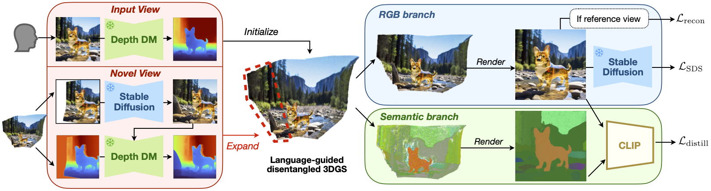

Method

We propose 3DitScene, a novel and unified scene editing framework leveraging language-guided disentangled
Gaussian Splatting that enables seamless editing from 2D to 3D, allowing precise control over scene composition
and individual objects.
We first incorporate 3D Gaussians that are refined through generative priors and optimization techniques.
Language features from CLIP then introduce semantics into 3D geometry for object disentanglement.
With the disentangled Gaussians, our method allows for manipulation at both the global and individual levels,
revolutionizing creative expression and empowering control over scenes and objects.
Experimental results demonstrate the effectiveness and versatility of 3DitScene in scene image editing.
Semantic Feature Visualization
In our 3DGS-based scene representation, each Gaussian includes a semantic embedding. Integrating semantics into 3DGS helps disentangle the overall scene, providing precise control over local objects.
More Samples: Camera Control
More Samples: Local Object Control
More Samples: Local Object Editing + Camera Control
Citation
@inproceedings{zhang20243DitScene,
author = {Qihang Zhang and Yinghao Xu and Chaoyang Wang and Hsin-Ying Lee and Gordon Wetzstein and Bolei Zhou and Ceyuan Yang},
title = {{3DitScene}: Editing Any Scene via Language-guided Disentangled Gaussian Splatting},
booktitle = {arXiv},
year = {2024}
}Acknowledgments
We borrow the source code of this website from GeNVS.